Archon Macro 사용 설명서
버전 2.0
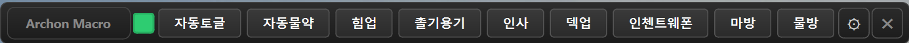
목차
1. 설치 방법 2. 탭 구성 (단축키 / 쫄법사 / 자동버프) 2-1. 단축키 탭 2-2. 쫄법사 탭 2-3. 자동버프 탭 3. 상태바 사용법 4. 설정 창 5. 슬롯 설정 6. 키 순서 편집기 7. 대상 창 설정 8. 단축키 입력 차단 9. 사용 예시 10. 주의사항1. 설치 방법
1. USB 장치를 컴퓨터에 연결합니다.
2. Archon_Setup.exe 파일을 실행합니다.
Archon Macro는 정식 코드 서명(EV 인증서)이 적용된 안전한 프로그램입니다.
아래와 같은 화면이 나타나면 "추가 정보"를 클릭한 후 "실행" 버튼을 눌러주세요.

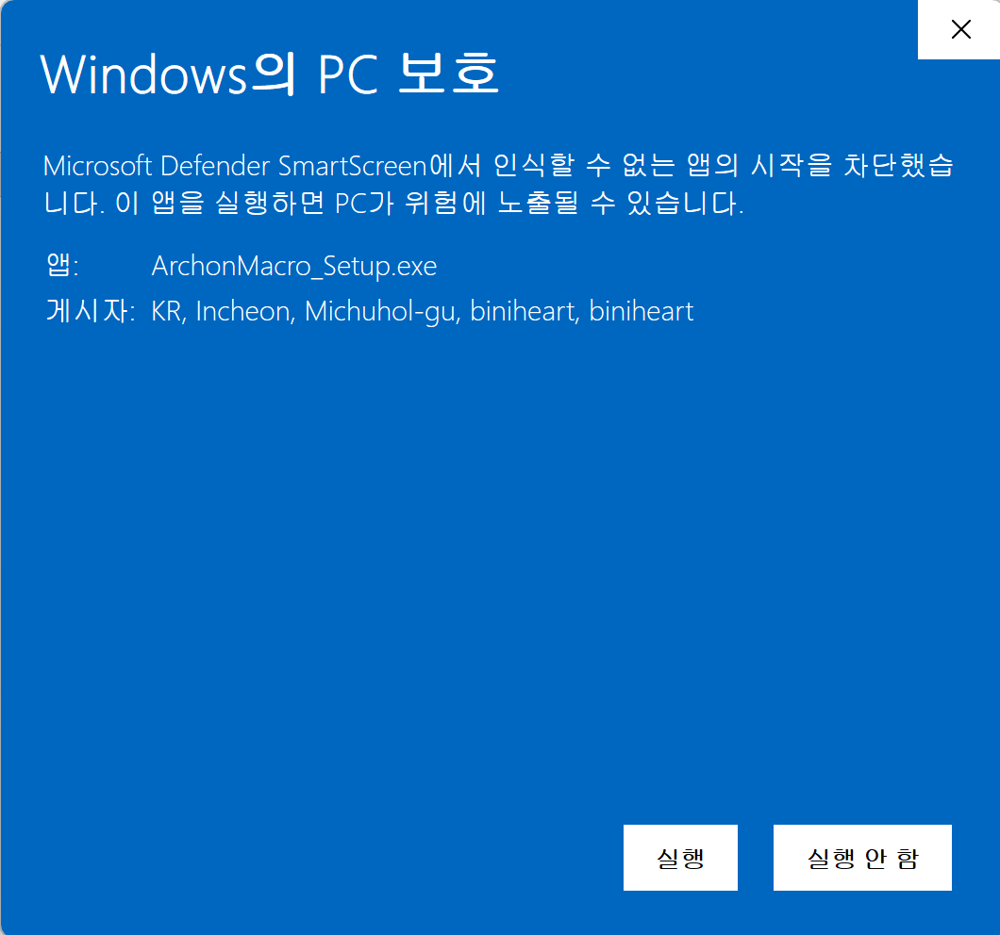
3. 설치 마법사의 안내에 따라 설치를 완료합니다.
4. 바탕화면의 Archon Macro 아이콘을 실행합니다.
5. 첫 실행 시 자동으로 장치 설정이 진행됩니다.
2. 탭 구성
Archon은 3개의 탭으로 기능이 구분됩니다. 한 번에 하나의 탭만 활성화되며, 탭을 전환하면 다른 탭의 동작이 자동 중단됩니다.
● 쫄법사: 마우스 좌클릭을 일정 간격으로 자동 반복
● 자동버프: 게임 화면의 특정 이미지(거래/파티 초대 등)를 자동 인식하고 버프 키순서 발동
2-1. 단축키 탭
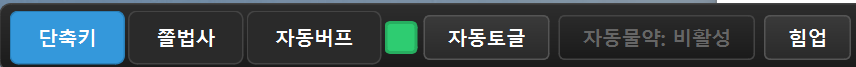
가장 기본적인 매크로 기능입니다. 설정에서 만든 매크로 슬롯을 단축키로 발동합니다.
| 구성 | 설명 |
|---|---|
| 마스터 토글 | 전체 매크로 활성/비활성. 초록=활성, 빨강=비활성 |
| 매크로 버튼 | 슬롯별 이름이 표시됩니다. 클릭으로 비활성/활성 전환 가능 |
| ⚙ 설정 | 설정 창을 열어 슬롯 추가/편집/삭제 (단축키 탭에서만 보임) |
매크로 슬롯의 자세한 설정 방법은 5. 슬롯 설정 참고.
2-2. 쫄법사 탭
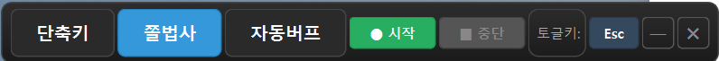
쫄 캐릭터를 위한 자동 좌클릭 기능입니다. 0.3초 간격으로 마우스 좌클릭을 반복합니다.
사용 방법
1. 쫄법사 탭에서 ● 시작 버튼을 클릭합니다.
2. 3초 카운트다운 메시지가 화면 중앙에 표시됩니다. 그 사이에 마우스를 캐릭터 위로 옮겨주세요.
3. 카운트다운이 끝나면 즉시 좌클릭 반복이 시작됩니다.
4. ■ 중단 버튼을 누르면 완전히 종료됩니다.
토글 (일시정지 / 재개)
토글 단축키(기본값: Esc)를 누르면 클릭을 일시정지/재개합니다.
| 상태 | 토글켬/끔 | 중단 버튼 | 클릭 발동 |
|---|---|---|---|
| 시작 | 토글켬 (초록) | 빨간색 활성 | O |
| 토글 끔 (일시정지) | 토글끔 (회색) | 빨간색 유지 | X |
| 토글 켬 (재개) | 토글켬 (초록) | 빨간색 유지 | O |
| 중단 (완전 종료) | 토글끔 | 비활성 | X |
토글 단축키를 변경하려면 Esc 버튼을 클릭하고 원하는 키를 입력합니다.
쫄법사 전용 단축키
쫄법사 탭의 ⚙ 설정 버튼을 클릭하면 쫄법사 전용 매크로 슬롯을 추가할 수 있습니다.
단축키 탭의 매크로와 완전히 독립되어 별도로 설정하며, 쫄법사 전용 버프(힐, 자힐 등)를 등록합니다.
• 쫄법사 전용 단축키는 ● 시작을 눌러 세션이 활성화된 상태에서만 발동됩니다.
• 중단 상태에서는 단축키를 눌러도 동작하지 않습니다.
2-3. 자동버프 탭
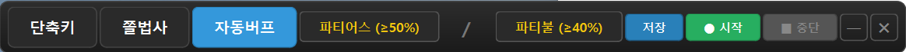
게임 화면을 자동으로 모니터링하여 거래 요청이나 파티 초대 같은 이미지를 인식하고, 설정한 키순서를 자동으로 발동합니다.
설정창에 등록한 대상 창 1번/2번에 각각 별도의 키순서를 설정하여 두 창을 번갈아가며 모니터링할 수 있습니다.
창 설정
각 창 이름 버튼(예: "파티어스 (≥50%)")을 클릭하면 해당 창의 상세 설정 다이얼로그가 열립니다.
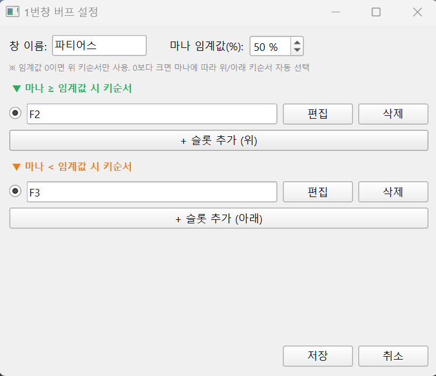
| 항목 | 설명 |
|---|---|
| 창 이름 | 구분용 이름 (예: 파티어스, 파티불). 비워두면 "1번창"/"2번창"으로 표시 |
| 마나 임계값(%) | 0~100. 0이면 위 키순서만 사용. 0보다 크면 마나에 따라 위/아래 자동 분기 |
| 마나 ≥ 임계값 시 키순서 | 마나가 충분할 때 발동할 키순서 (여러 슬롯 + 라디오 선택) |
| 마나 < 임계값 시 키순서 | 마나가 부족할 때 발동할 키순서 (예: 자힐 등 회복 동작) |
1. 매 0.5초마다 1번창 → 2번창 순회
2. 각 창에서 마나 측정
3. 마나 < 임계값이면 → "아래 키순서" 즉시 발동 (이미지 무관)
4. 마나 ≥ 임계값이면 → 거래/파티 이미지 검색 → 발견 시 자동 클릭 + "위 키순서" 실행
슬롯 라디오 선택
각 키순서 영역에 여러 슬롯을 추가하고 라디오 버튼으로 하나만 선택할 수 있습니다. 다양한 케이스(예: 30% 자힐 vs 50% 자힐)를 미리 만들어두고 상황에 따라 전환할 때 유용합니다.
저장 / 시작 / 중단
창 설정 변경 후 반드시 [저장] 버튼을 누르고, [● 시작]으로 모니터링을 시작합니다. 중단하려면 [■ 중단].
• 자동버프는 대상 창이 화면에 표시되어야 동작합니다.
• 매 검색 시 대상 창을 자동으로 앞으로 가져옵니다 (다른 창에 가려져도 OK).
• 두 게임 창 모두 마나 부족 시 → 두 창 키순서가 번갈아 발동됩니다.
3. 상태바 사용법
프로그램을 실행하면 화면 상단에 상태바가 표시됩니다.
| 구성 요소 | 설명 |
|---|---|
| 탭 버튼 (단축키 / 쫄법사 / 자동버프) | 좌측 3개 버튼으로 모드 전환. 활성 탭은 파란색. 탭 버튼을 드래그하면 상태바 위치를 이동할 수 있습니다. |
| 마스터 토글 | (단축키 탭 전용) 전체 매크로 활성/비활성 초록 = 활성, 빨강 = 비활성 |
| 매크로 버튼들 | (단축키 탭 전용) 각 슬롯의 이름. 클릭하면 해당 슬롯 활성/비활성 전환. |
| ⚙ (설정) | (단축키 탭 전용) 설정 창을 엽니다. |
| ㅡ (최소화) | 상태바를 트레이로 최소화합니다. |
| ✖ (종료) | 프로그램을 종료합니다. |
슬롯 활성/비활성 토글 (단축키 탭)
단축키 탭에서 매크로 버튼을 클릭하면 해당 슬롯이 비활성화됩니다.
비활성화된 슬롯은 '비활성'으로 표시되며, 단축키가 무시됩니다.
다시 클릭하면 활성화됩니다.
4. 설정 창
상태바의 ⚙ 버튼을 클릭하면 설정 창이 열립니다.
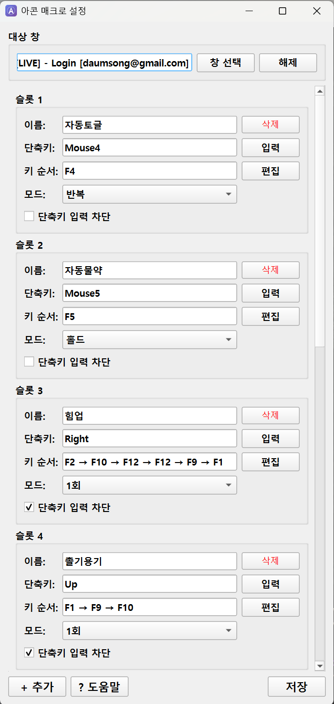
설정 창 구성:
• 대상 창: 매크로가 동작할 프로그램 창을 지정합니다.
• 슬롯 목록: 각 매크로의 이름, 단축키, 키 순서, 모드를 설정합니다.
• + 추가: 새로운 매크로 슬롯을 추가합니다.
• ? 도움말: 프로그램 내 도움말을 표시합니다.
• 저장: 변경사항을 저장합니다.
5. 슬롯 설정
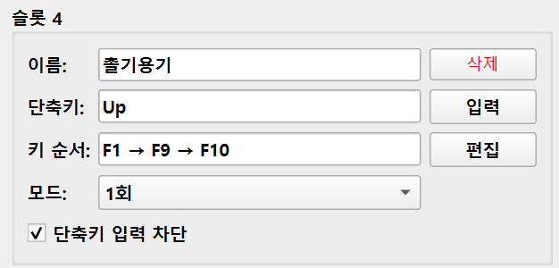
| 항목 | 설명 |
|---|---|
| 이름 | 상태바에 표시될 매크로 이름을 입력합니다. |
| 단축키 | "입력" 버튼 클릭 후 0.5초 대기 → 원하는 키를 누르면 설정됩니다. 키보드: F4, Tab, Shift+2, Ctrl+1 등 마우스: Mouse4(뒤로), Mouse5(앞으로) 등 |
| 키 순서 | "편집" 버튼을 클릭하면 키 순서 편집기가 열립니다. |
| 모드 | 반복: ON/OFF 토글, 계속 반복 홀드: ON이면 키 누르고 유지, OFF면 뗌 1회: 한번만 실행 후 자동 OFF |
| 단축키 입력 차단 | 체크하면 단축키를 눌러도 해당 키가 프로그램에 전달되지 않습니다. |
| 삭제 | 해당 슬롯을 삭제합니다. |
모드 선택
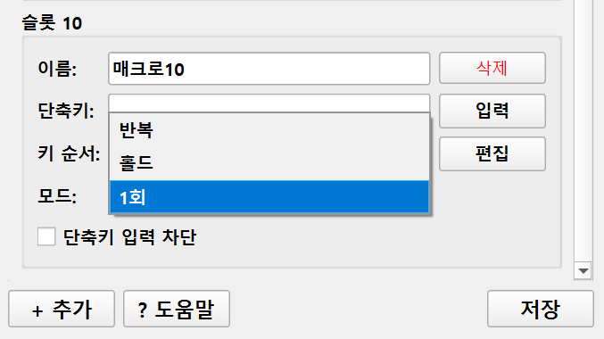
6. 키 순서 편집기
활용 예시: 마방 전환
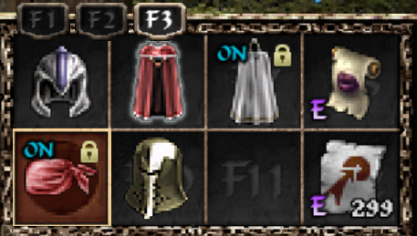
위 게임 화면에서 마방 장비를 전환하려면 F3 → F5 → F7 → F6 → F1 순서로 키를 눌러야 합니다. 이 순서를 매크로로 등록하면 단축키 한번으로 자동 실행됩니다.
슬롯 설정에서 '편집' 버튼을 클릭하면 키 순서 편집기가 열립니다.

편집기 구성
• 각 동작이 번호와 함께 세로로 나열됩니다.
• 동작과 동작 사이에 대기 시간(초)을 설정할 수 있습니다.
• ▲ ▼ 버튼으로 순서를 변경할 수 있습니다.
• X 버튼으로 동작을 삭제할 수 있습니다.
• 동작을 클릭하면 해당 동작을 수정할 수 있습니다.
+ 키/버튼

키보드 키 또는 마우스 버튼을 추가합니다. 세 가지 모드 중 선택:
• 탭: 키를 누르고 바로 뗌 (일반적인 키 입력)
• 누르기 (유지): 키를 누른 상태 유지 (예: Shift 누른 채 유지)
• 떼기: 누르고 있던 키를 뗌
1. + 키/버튼 → 누르기 → LShift 선택
2. + 좌표클릭 → 좌클릭 → 화면 클릭
3. + 키/버튼 → 떼기 → LShift 선택
+ 좌표클릭

• 좌클릭: 지정 좌표에서 좌클릭
• 우클릭: 지정 좌표에서 우클릭
• 더블클릭: 지정 좌표에서 더블클릭
• 이동: 마우스를 좌표로 이동 (클릭 없음)
+ 타이핑

• 한글, 영문, 숫자, 특수문자 모두 지원
• 한글 입력 시 PC의 입력 모드가 한글이어야 합니다.
• 타이핑 실행 중에는 다른 모든 매크로가 자동 일시정지됩니다.
+ 드래그
1단계: 반투명 화면에서 시작점 클릭
2단계: 반투명 화면에서 끝점 클릭
3단계: 드래그 이동 시간(초) 입력
7. 대상 창 설정
특정 프로그램 창에서만 매크로가 동작하도록 설정합니다.
설정 방법
1. 설정 창 상단의 "창 선택" 버튼을 클릭합니다.
2. 3초 안에 대상 프로그램 창을 클릭합니다.
3. 선택된 창의 이름이 표시됩니다.
대상 창 설정 시 효과
• 마우스 좌표가 창 기준 상대좌표로 저장됩니다.
• 창이 이동해도 정확한 위치에 클릭됩니다.
• 해당 창이 활성화일 때만 단축키/매크로가 동작합니다.
• 다른 창으로 전환하면 매크로가 자동 일시정지됩니다.
8. 단축키 입력 차단
슬롯 설정에서 '단축키 입력 차단' 체크박스를 체크하면, 단축키를 눌러도 해당 키가 프로그램에 전달되지 않습니다.
예시
• Tab 키를 단축키로 설정하고 '단축키 입력 차단'을 체크
• Tab을 눌러도 프로그램에서 Tab 기능이 실행되지 않고, 매크로만 실행됩니다.
9. 사용 예시
예시 1: 자동토글 (F4 반복)
단축키 Mouse4를 누르면 F4 키가 0.2초 간격으로 반복 입력됩니다.


예시 2: 자동물약 (F5 홀드)
단축키 Mouse5를 누르면 F5 키를 누르고 있는 상태가 됩니다. 다시 누르면 뗍니다.


예시 3: 힘업 (버프 전환)
단축키 Right(→)를 누르면 F2→F10→F12→F12→F9→F1 순서로 키가 입력됩니다. 1회 실행 후 자동 종료.


예시 4: 인첸트웨폰
단축키 Down(↓)을 누르면 F2→F10→F11→F9→F1 순서로 키가 입력됩니다.


예시 5: 마방 (마법 방어 장비 전환)
단축키 PageDown을 누르면 F3→F5→F7→F6→F1 순서로 키가 입력됩니다.

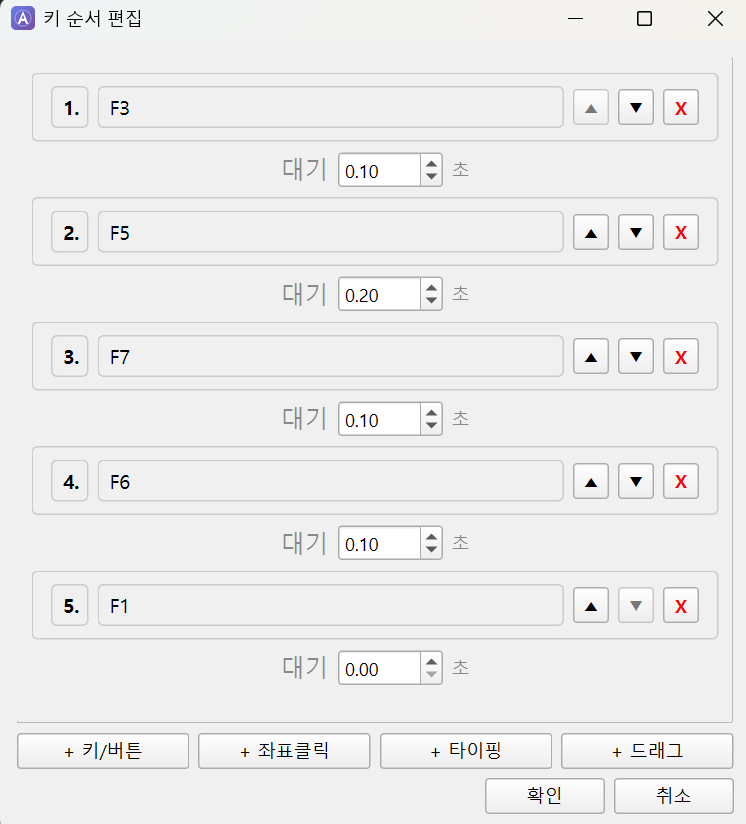

예시 6: 물방 (물리 방어 장비 전환)
단축키 PageUp을 누르면 F3→F9→F6→F7→F1 순서로 키가 입력됩니다.
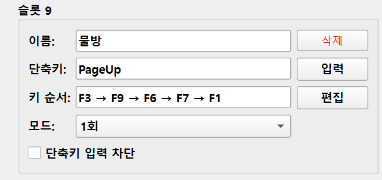
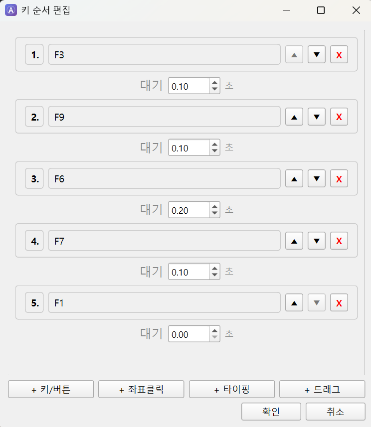

10. 주의사항
• 설정 변경 후 반드시 '저장' 버튼을 눌러야 적용됩니다.
• 저장하지 않고 창을 닫으면 변경사항이 취소됩니다.
• 조합 단축키(Shift+2 등)는 키를 뗀 후에 매크로가 실행됩니다.
• 대상 창 설정 시 마우스 좌표는 창 기준 상대좌표입니다.
• 한글 타이핑 시 PC의 입력 모드가 한글이어야 합니다.
• 타이핑 실행 중에는 다른 모든 매크로가 자동 일시정지됩니다.
• ESC를 3초 이상 누르면 전체 매크로(단축키 탭)가 비활성화됩니다.
• 탭 전환 시 다른 탭의 동작이 자동으로 중단됩니다 (한 번에 한 탭만 활성).
• USB 장치가 연결되어 있어야 프로그램이 정상 동작합니다.
쫄법사 사용 안내
쫄법사 기능은 쫄 캐릭터가 실행 중인 PC에서 사용해야 합니다.
상태바 상단의 쫄법사 탭을 선택한 후, ● 시작 버튼을 클릭합니다. 3초 카운트다운 동안 마우스 커서를 캐릭터 위에 올려놓고 마우스를 움직이지 마세요.
토글 단축키(기본값 Esc, 사용자 변경 가능)를 누르면 쫄법사가 비활성화되고, 다시 누르면 활성화됩니다. ■ 중단 버튼으로 완전히 중지할 수 있습니다.
쫄 캐릭터 버프 설정
쫄 캐릭터에도 Archon 단축키를 적용하여 버프를 실행할 수 있습니다.
예시: 힐 / 자힐 설정
• 힐: F6에 힐이 있는 경우, 키 순서에 F6 한 번만 설정하면 됩니다.
• 자힐: 키 순서에 F6을 두 번 설정하면 자힐이 실행됩니다.
문의사항이 있으시면 1:1 문의를 이용해 주세요.